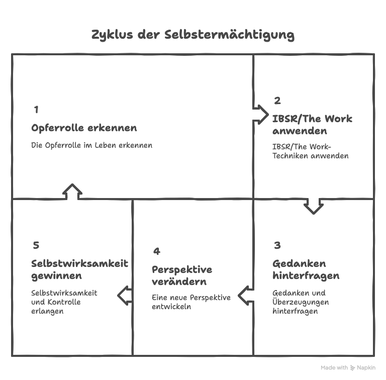
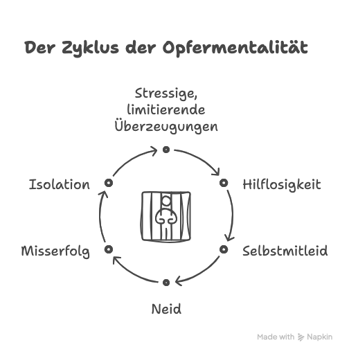

Raus aus der Opferrolle - Mit The Work und IBSR (Inquiry Based Stress Reduction) zu neuer Stärke finden
Hey du! Fühlst du dich manchmal wie ein Spielball des Schicksals? Als ob das Leben dich herumschubst und du nichts dagegen tun kannst? Willkommen im Club - du bist nicht allein. Viele von uns kennen dieses Gefühl der Machtlosigkeit nur zu gut.
Die gute Nachricht: Du musst kein Opfer deiner Umstände und deiner Opfer-Denke bleiben (selbst wenn du im ersten Moment denkst, dass es da keinen Weg raus gibt). Mit den richtigen Tools kannst du dein Leben, Dein Denken und damit deine innere Erfahrung selbst in die Hand nehmen und deine innere Stärke entdecken.
Lass uns gemeinsam einen Blick darauf werfen, wie Inquiry Based Stress Reduction (IBSR) bzw. The Work von Byron Katie dir dabei helfen können, die Opferrolle hinter dir zu lassen und deine Selbstwirksamkeit zu entdecken. Der Weg zu einem selbstbestimmten Leben beginnt damit, dass du erkennst, wie sehr deine Gedanken deine Realität formen.
Wenn du gerade in der Opferrolle steckst, kann es sein, dass du eine Veränderung für schwer oder gar gänzlich unmöglich hältst. Das ist okay. Du brauchst nicht glauben, dass sich etwas verändern wird. Wozu ich dich lediglich einladen möchte, ist diesem Ansatz eine Chance zu geben. Dabei hast du nichts zu verlieren, außer vielleicht ein paar Minuten deiner Zeit. Sollte das ganze für dich, nach einem ehrlichen, ernsthaften Versuch nicht 'funktioniert' haben, dann hast du nichts verloren. Du bist weiterhin in der Opferrolle.
Solltest Du allerdings nach dem Prozess, den ich dir gleich vorstellen werde, eine positive Veränderung in deiner inneren Haltung, deinem Denken, deiner Selbstwahrnehmung, deinem Fühlen erkennen, dann hast du 'dazu gewonnen' und kannst dieses Tool, diesen Weg zu mehr Freiheit, Klarheit und Selbstwirksamkeit wieder und wieder für dich nutzen.

Die Opferrolle - Was steckt dahinter?
Bevor wir in die Lösungen eintauchen, lass uns kurz verstehen, was die Opferrolle eigentlich ist. In der Opferrolle sehen wir uns als hilflos, ausgeliefert und machtlos und fühlen uns entsprechend. Wir glauben, dass wir keinen Einfluss auf unser Leben haben und dass alles Schlechte, was uns passiert, irgendwie unvermeidbar ist und nicht so sehr etwas mit uns und unserem Denken, sondern dem Außen und anderen zu tun hat.
Diese Denkweise wird oft von tief verwurzelten Glaubenssätzen / Überzeugungen genährt, die wie ein unsichtbares Gefängnis wirken. Hier ein paar Beispiele für typische "Opfer-Gedanken":
- "Ich kann sowieso nichts ändern."
- "Das Leben meint es nicht gut mit mir."
- "Andere haben es immer leichter als ich."
- "Ich werde nie erfolgreich sein."
- "Keiner mag mich."
- "Niemand unterstützt mich."
- "Immer geht alles schief."
- "Ich kann eh nichts machen."
- "Damit ich ein erfülltes Leben haben kann, brauche ich von ihm / ihr, dass _________."
Und natürlich ist diese Liste nicht abschließend. Die Gedanken die einen dazu verleiten sich in einer Opferrolle zu sehen, können auch subtil sein. Beispielsweise wenn wir uns selbst mit unserem Leben in der Wartehaltung sehen und denken wir können erst 'weiter' machen oder unser Leben in die eigene Hand nehmen, wenn andere uns ihre Erlaubnis gegeben haben oder ähnliches.

Manchmal sind es Erfahrungen aus unserer Kindheit, denen wir die Verantwortung dafür geben, wie wir jetzt sind.
Vielleicht ist es unsere Hautfarbe, Herkunft oder etwas was mal jemand zu uns gesagt hat...
Ich sage nicht, dass diese Dinge keine 'Auswirkungen' hatten.
Die Frage ist, möchte ich eine neue Erfahrung einladen? Möchte ich dass diese "Dinge" die vergangen sind, aber in meinem Geist noch als Bilder und Erinnerungen lebendig sind, weiterhin (Aus)Wirkung über mein Leben, Denken, meine innere Erfahrung und mein Selbstbild haben? Und helfen mir diese Gedanken oder halten sie mich in einer stressigen Erfahrung und 'in der Opferrolle' gefangen?
Mein Eindruck ist, dass die meisten von uns, mal öfter mal weniger häufig solche (Opferrollen-)Gedanken denken und glauben.
Die Frage ist, was wir dann damit machen, wenn es uns bewusst wird...
Für mich ist der Knackpunkt: Diese Gedanken / Überzeugungen sind nicht die Realität. Sie sind eben 'nur' Gedanken, die wir glauben. Sie sind 'nur' Gewohnheiten unseres Geistes, die wir verändern können, bzw. die sich verändern, wenn wir sie untersuchen und nochmal auf den Prüfstand stellen. (Wie das geht erkläre ich dir gleich)
Indem du lernst, dein Leben aktiv zu gestalten, von Innen (deinem Denken und damit deiner Wahrnehmung) nach Außen, anstatt dich von vermeintlich äußeren Umständen kontrollieren zu lassen, machst du den ersten Schritt zu einem selbstbestimmteren Leben. Und genau hier kommen IBSR / The Work ins Spiel!
Inquiry Based Stress Reduction (IBSR) aka. The Work - Dein Toolkit für innere Freiheit
Inquiry Based Stress Reduction (IBSR), auch bekannt als "The Work" von Byron Katie, ist mein präferiertes Schweizer Taschenmesser für den Geist. Es ist eine 'einfache', aber unglaublich kraftvolle Methode, um (stressige) Gedanken, Überzeugungen und (limitierende) Glaubenssätze zu hinterfragen und 'aufzulösen'.
So funktioniert's:
Hier einmal abstrakt und dann unten mit einem konkreten Beispiel...
1. Identifizieren des stressigen Gedankens:
Schnapp dir einen stressigen Gedanken und schreibe ihn auf. (Du bist vielleicht versucht das im Kopf zu machen und ich möchte dich ermutigen diese Aufgabe wirklich schriftlich zu machen)
2. Untersuchen des Gedankens:
Stelle dir die 4 Fragen von The Work, die ich dir hier gleich teile. Wichtig dabei, lass dir bei jeder der Fragen Zeit… IBSR ist eine Art Meditation, eine Achtsamkeitspraxis.
The Work 'funktioniert' dann, wenn du die Antworten nicht im Kopf suchst, sondern mit den Fragen nach Innen gehst und die Antworten aus deiner inneren Stille zu dir kommen lässt.
Ich selbst lese mir den Gedanken, den ich unter Schritt 1 aufgeschrieben habe in aller Regel nochmal laut vor, stelle mir dann die Frage und schließe die Augen, bis eine Antwort zu mir kommt.
Okay, hier sind die Fragen:
Frage 1: Ist das wahr? (Frage dich das ehrlich, wie ein Detektiv. Die Antwort ist entweder Ja oder Nein.)
Frage 2: Kannst du mit absoluter Sicherheit wissen, dass das wahr ist? (Die Antwort ist entweder Ja oder Nein. Wenn deine Antwort bei der ersten Frage schon ein Nein war, kannst du diese Frage überspringen.)
Frage 3: Wie reagierst du, was passiert, wenn du diesen Gedanken glaubst? (Wie reagierst du, wenn du diesen Gedanken glaubst? Wie fühlt es sich an, wenn du diesen Gedanken glaubst? Wie behandelst du dich selbst und andere, wenn du den Gedanken glaubst? .... Diese Frage erlaubt es dir, die Auswirkungen des Festhaltens an dem Gedanken in deinem Leben zu erkennen.)
Frage 4: Wer oder was wärst du ohne diesen Gedanken? (Wenn du den Gedanken nicht mal denken könntest... wer oder was wärst du dann? Wie würde sich das möglicherweise anders anfühlen? Was wäre dir dann vielleicht anderes möglich?)
3. Umkehren:
Drehe den Gedanken um und finde drei konkrete Beispiele, wie die Umkehrung wahr oder wahrer sein könnte als der stressige Gedanke. Hierbei geht es um für dich authentische Beispiele. Kannst du ein für dich authentisches Beispiel dafür finden, wie das Gegenteil des stressigen Gedankens wahr oder wahrer ist?
____
Du siehst ... es sind tatsächlich 'nur' 4 Fragen und das Umkehren des untersuchten Gedankens.
Klingt simpel, oder?
Aber unterschätze die Kraft dieser Methode nicht.
Eine Reihe an Studien haben gezeigt, dass regelmäßiges Praktizieren von IBSR zu einer signifikanten Reduzierung von Angst, Depression und Stress führen kann. Das ist übrigens auch meine persönliche Erfahrung nachdem ich diese Untersuchung sicherlich schon tausendfach selbst für stressige Gedanken in 'meinem' Geist angewandt habe.
IBSR / The Work in Action - Ein praktisches Beispiel
Lass uns das Ganze mal an einem Beispiel durchspielen.
Stell dir vor, du liegst nachts im Bett und kannst nicht einschlafen. Gedanken kreisen dir durch den Kopf. Ein Gedanke, den du identifizieren kannst, lautet: "Ich werde nie erfolgreich sein." Du machst dir die Nachtlampe an und schreibst dir den Gedanken auf. "Ich werde nie erfolgreich sein". (Schritt 1: Identifizieren und Aufschreiben)
Im nächsten Schritt gehst du in den Untersuchungsteil (Schritt 2: Hinterfragen).
Frage 1. Ist das wahr?
Deine erste Reaktion mag "Ja!" sein. Aber wenn du tiefer gehst - kannst du wirklich mit Sicherheit sagen, dass du *nie* erfolgreich sein wirst?
Frage 2. Kannst du mit absoluter Sicherheit wissen, dass das wahr ist?
Hmm, nein, mit absoluter Sicherheit kannst du das nicht wissen. Niemand kann die Zukunft vorhersagen. Es gibt immer Möglichkeiten für Veränderung und Wachstum. Außerdem... was bedeutet 'erfolgreich sein' eigentlich ganz genau? Also nein, mit absoluter Sicherheit kannst du es nicht wissen.
Frage 3. Wie reagierst du, wenn du diesen Gedanken glaubst?
Vielleicht fühlst du dich entmutigt, traurig oder hoffnungslos. Möglicherweise gibst du schneller auf oder versuchst gar nicht erst, deine Ziele zu erreichen. In der Situation in der du den Gedanken hast, jetzt hier gerade, nachts vor dem Einschlafen, hält der Gedanke dich auf jeden Fall wach. Er macht unruhig. Du bist im Hamsterrad der Gedanken, in Vergleichen mit anderen. Bilder von 'erfolgreichen Instagramern' fliegen dir durch den Kopf. Und Mangelgedanken. Der Gedanke, dass du nicht genug bist. Stress.
Frage 4. Wer oder was wärst du ohne diesen Gedanken?
Ohne diesen Gedanken wäre mehr Ruhe da. Ohne den Gedanken würdest du möglicherweise schon ruhig schlafen. Ohne den Gedanken würdest du dich ruhiger und mehr im Vertrauen fühlen. Ohne den Gedanken würdest du das Bett unter dir spüren, vielleicht, dass der Atem den Körper bewegt. Ohne de Gedanken hättest du hier, jetzt, in diesem Moment gerade kein Problem.
Schritt 5. Die Umkehrungen:
"Ich werde erfolgreich sein." Wie könnte das wahr oder wahrer sein? Kannst du 3 für dich authentische Beispiele finden?
- "Nun, ich habe schon in der Vergangenheit Erfolge erzielt, auch wenn sie klein waren."
- "Ich lerne ständig dazu und wachse, was meine Chancen auf Erfolg erhöht."
- "Es gibt viele verschiedene Definitionen von Erfolg, und in einigen Bereichen bin ich bereits erfolgreich."
____
Siehst du, wie sich Perspektive durch diesen Prozess verändern kann? In dem Beispiel mag das sehr 'kopfgesteuert' als rein linearer Denkprozess rüberkommen und meine Erfahrung ist: Immer wenn ich über die Fragen meditiere und damit nach innen gehe, verändert sich das FÜHLEN mit.
Kannst du erkennen, wie so die Transformation von einer stressigen Überzeugung, einem einschränkenden Glaubenssatz zu einer offeneren, positiveren Sichtweise möglich werden kann?
Meine Erfahrung ist immer wieder: Durch die Anwendung von IBSR lässt sich das Leben zum Positiven verändern und aus der Opferrolle im Denken ausbrechen.
Die Wissenschaft hinter der Methode
Vielleicht bist du immer noch nicht überzeugt. Das ist okay. Vielleicht sagst du: "Klingt ja gut, aber funktioniert das wirklich?", gibt es Studien dazu? Bevor ich das ausprobiere, brauche ich etwas 'handfestes wissenschaftliches'.
Die Antwort ist: Ja! Und nicht nur ich erlebe, dass IBSR funktioniert, sondern das sagt auch 'die Wissenschaft'.
Eine 2015 veröffentlichte klinische Pilot Studie aus dem Jahr untersuchte die Auswirkungen von IBSR auf das Wohlbefinden der TeilnehmerInnen. Die Ergebnisse waren beeindruckend: Nach nur einem 9-tägigen IBSR-Workshop zeigten die Teilnehmer eine signifikante Verringerung depressiver Symptome und eine Verbesserung ihrer Lebensqualität [1]. Die Analyse mit gemischten Modellen zeigte signifikante positive Veränderungen zwischen dem Ausgangswert im Vergleich zum Ende der Intervention und der Nachuntersuchung nach sechs Monaten in allen folgenden Maßen:
- Beck-Depressions-Inventar-II (BDI-II): Messung des Schweregrads von Depressionen.
- Subjektive Glücksskala (SHS): Messung des persönlichen Glücksgefühls.
- Lebensqualitäts-Inventar (QOLI): Bewertung der Zufriedenheit mit verschiedenen Aspekten des Lebens.
- Schnelles Inventar depressiver Symptome - Selbstbericht (QIDS-SR16): Erfassung der Symptome einer Depression.
- Ergebnisfragebogen 45.2 (OQ-45.2): Messung der allgemeinen psychischen Gesundheit und des Wohlbefindens.
- Inventar zur Messung des Zustands- und Eigenschaftsärgers - 2. Version (STAXI-2): Erfassung der Häufigkeit und Intensität von Ärger.
- Inventar zur Messung von Angstzuständen (STAI): Messung der aktuellen und allgemeinen Angst.
Eine weitere Studie, fand heraus, dass sich mit IBSR Prüfungsangst und Prokrastination längerfristig reduzieren lässt [2].
Und das sind nur zwei Beispiele von vielen.
Eine gute Freundin in Zimbabwe arbeitet mit der gleichen Methode mit jungen Menschen in Zimbabwe die HIV positiv sind. Sie unterstützt sie durch diese Untersuchung darin Selbststigmatisierung und Scham loszulassen.
Das Ergebnis: Die Teilnehmenden leiden weniger unter Depressionen, nehmen ihre Medikamente regelmäßiger, gehen offener und transparenter in der Kommunikation mit ihrem gesundheitlichen Status um und bringen sich wieder stärker im sozialen Leben ein.
Ein Artikel auf Englisch über diese Freundin findest Du hier: A woman's journey fighting HIV stigma
Darüber hinaus wurde auch diese Intervention auch dokumentiert: Wakakosha 'Du bist es wert': Bericht über die Auswirkungen einer gemeinschaftsbasierten, peer-led HIV-Selbststigmatisierungsintervention zur Verbesserung des Selbstwertgefühls und Wohlbefindens unter jungen Menschen, die mit HIV in Simbabwe leben.
______
Zusammengefasst: IBSR kann dir helfen, schwierige Situationen im Leben neu zu betrachten. Mach es für dich - es kann sowohl dein persönliches als auch dein berufliches Leben transformieren.
Dein Weg aus der Opferrolle
Okay, jetzt kennst du die Methode etwas und hast erste Indizien dazu, dass sie wissenschaftlich fundiert ist. Aber wie integrierst du IBSR in deinen Alltag, um langfristig aus der Opferrolle herauszukommen? Hier sind ein paar praktische Tipps:
1. Tägliche Mini-Übungen:
Nimm dir jeden Tag 5-10 Minuten Zeit, um einen stressigen Gedanken zu identifizieren, ihn aufzuschreiben und durch die vier Fragen zu führen. Morgens nach dem Aufwachen oder abends vor dem Schlafengehen sind gute Zeitpunkte dafür.
2. Journaling: Führe ein IBSR-Tagebuch. Schreibe deine stressigen Gedanken auf und dokumentiere deine Antworten auf die vier Fragen. Das hilft dir, Muster zu erkennen und deine Fortschritte zu sehen. Das Schreiben hilft außerdem dabei wirklich die Fragen zu beantworten und nicht gedanklich abzuschweifen.
3. Buddy-System: Finde einen Freund oder eine Freundin, mit dem/der du IBSR praktizieren kannst. Ihr könnt euch gegenseitig unterstützen und voneinander lernen. Außerdem kannst du dich HIER für ein kostenloses Appetizer Coaching mit The Work bei mir eintragen. In dem kostenlosen Erstgespräch kann ich dich durch die 4 Fragen und Umkehrungen begleiten.
4. Workshops und Retreats: Überleg dir, an einem IBSR-Workshop teilzunehmen oder sogar ein Retreat zu besuchen. Die intensive Praxis in einer Gruppe kann sehr transformativ sein. Schreib mir gerne, wann bei mir der nächste IBSR Workshop stattfindet. Alternativ kannst du beispielsweise auch beim VTW, dem Verband für The Work (dort bin ich auch Mitglied) nach aktuellen Events schauen.
5. Integriere es in deinen Alltag: Wende IBSR nicht nur auf "große" Probleme an, sondern auch auf kleine alltägliche Stresssituationen. Du hast einen langen Arbeitsweg in den Öffis? Perfekte Gelegenheit für eine Mini-Inquiry mit den 4 Fragen von The Work!
6. Sei geduldig und liebevoll mit dir: Veränderung braucht manchmal Zeit. Feiere deine kleinen Erfolge und sei nicht zu hart zu dir, wenn du mal in alte (Denk)Muster zurückfällst (das ist 'normal' und einfach eine w. Wenn du The Work / IBSR ein bisschen praktisch für dich kennengelernt hast, wirst du vielleicht irgendwann jede neue 'Stresssituation' oder jeden 'Rückfall' in ein altes Denkmuster einfach als eine weitere Chance begreifen mit IBSR etwas neues über dich und deine (Gedanken)Welt zu lernen. Meine Perspektive ist: Wenn ich Jahrzehntelang stressige Gedanken geübt und geglaubt habe, dann darf ich nun auch ein bisschen Geduld haben, bei der inneren Arbeit diese Gedankenmuster aufzulösen.
Mit diesen Praktiken heißt es: Opferrolle adè! Bedenke jedoch, dass es nicht umsonst "The Work" (Die Arbeit) heißt. Das Verlassen der Opferrolle und die innere Arbeit kann tatsächlich mit Arbeit / und geistigem Stretching verbunden sein. Aber an der Opferrolle und stressigem Denken festzuhalten ist in meiner Erfahrung noch viel anstrengender.
Die Magie der Selbstermächtigung
Wenn du anfängst, IBSR regelmäßig zu praktizieren, wirst du vielleicht zunächst subtile Veränderungen bemerken. Du fühlst dich etwas leichter, etwas freier. Aber mit der Zeit können diese kleinen Veränderungen zu einer starken Transformation summieren.
Stell dir vor, wie es sich anfühlen würde, wenn:
- Du Herausforderungen als Chancen siehst, statt als Bedrohungen
- Du dich nicht mehr von deinen negativen Gedanken lähmen lässt
(und weißt, dass du sie allesamt untersuchen kannst und sich dadurch Veränderung im Denken einstellt)
- Du die Kraft in dir spürst, dein Leben aktiv zu gestalten
- Du dich nicht mehr als Opfer fühlst, sondern als Schöpfer deines Lebens
Das ist keine Utopie. Das ist das Potenzial, das in dir steckt, wenn du dich von den Fesseln der Opferrolle befreist.
Regelmäßige IBSR-Praxis stärkt deine individuelle Resilienz und hilft dir, vom Opfer zum Gestalter/in deines Lebens zu werden. Ein starkes Selbstbewusstsein ist oft das Resultat dieser Transformation.
Dein nächster Schritt
Du hast jetzt das Grundwissen und die Tools, um deine Reise aus der Opferrolle zu beginnen. Was ist also dein nächster Schritt?
Hier ist meine Herausforderung an dich: Nimm dir in den nächsten 24 Stunden 10 Minuten Zeit. Identifiziere einen stressigen Gedanken, der dich in der Opferrolle hält, und führe ihn durch die vier Fragen von The Work. Sei neugierig, sei offen und siehe, was passiert.
Du wünscht dir Support dabei und weißt immer noch nicht so richtig, wie du loslegen kannst? Dann trag dich einfach HIER für einen kostenlosen Appetizer Call ein und ich unterstütze dich im ersten Durchlauf.
Erinnere dich: Jede große Reise beginnt mit einem kleinen Schritt. Du musst nicht von heute auf morgen dein ganzes Leben umkrempeln. Es geht darum, Schritt für Schritt, Gedanke für Gedanke, deine innere Freiheit zurückzugewinnen.
Bist du bereit, deine Kraft zu entdecken und dein Leben selbst in die Hand zu nehmen? Die Tür steht offen. Du musst nur hindurchgehen.
Lass uns gemeinsam die Opferrolle hinter uns lassen und ein Leben voller Selbstbestimmung, Freude und Erfüllung erschaffen. Du hast die Kraft dazu – jetzt ist es an der Zeit, sie zu nutzen!
Jeder kleine Schritt zum Ausbrechen aus der Opferrolle ist ein Schritt in Richtung Freiheit. Erlebe ein neues Selbstbewusstsein, indem du deine Gedanken hinterfragst und dein Leben selbst in die Hand nimmst.
Quellen:
[1] Smernoff, E., Mitnik, I., Kolodner, K., & Lev-Ari, S. (2015). The effects of "The Work" meditation (Byron Katie) on psychological symptoms and quality of life—A pilot clinical study. Explore, 11(1), 24-31.
[2] Krispenz, A. (2019). Reduktion von Prüfungsangst durch das Hinterfragen angsterzeugender Kognitionen
Lust auf die "Überholspur" in Sachen Innerer Arbeit?
Lieber Jetzt Deine inneren Blockaden identifizieren, innerlich aufräumen, Stress reduzieren und Verantwortung übernehmen, als die gleichen Themen noch ein Jahr mit Dir rumzuschleppen? Möchtest Du im Arbeitsalltag, im Business oder in deinen zwischenmenschlichen
Beziehungen, stressfreier, klarer, freundlicher und müheloser unterwegs sein?
Trag Dich hier für ein kostenloses Erstgespräch und
Appetizer-Coaching ein...
Unverbindliches kostenloses Erstgespräch. Kein Druck, nur Wert!

Thomas Jakel ist u.a. bekannt aus...


© All Copyrights 2025 by Thomas Jakel